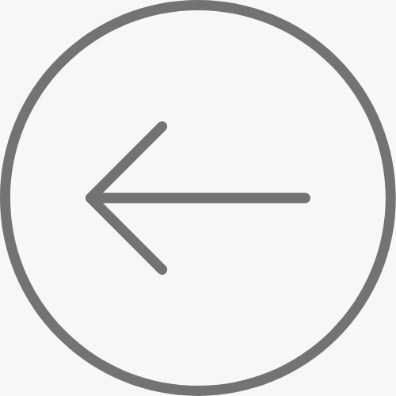

LA MAGIA DELLA STAMPA
Project Type
Microdocumentary
Tools Used
Canon C100, Sony Wireless Lavs, Directional Shotgun Mic, iMovie, Final Cut Pro
Role
Producer, Director, Editor
Year
2022
In the summer of 2022 I participated in iei Media's study abroad program in Urbino, Italy where I stayed and studied for four weeks producing this microdocumentary.
Struck by the city and its art, I sought to capture a modern working artist practicing their craft in a renaissance setting.